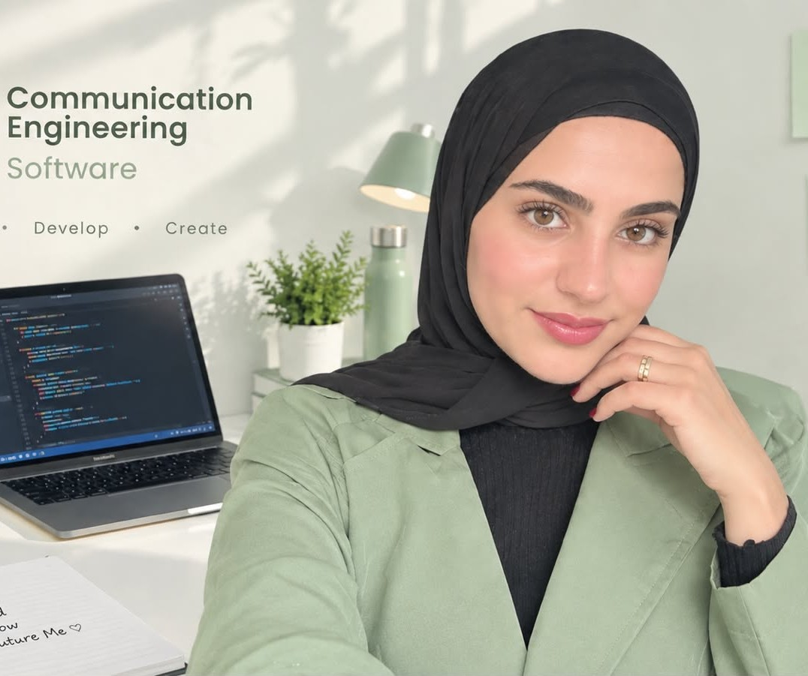
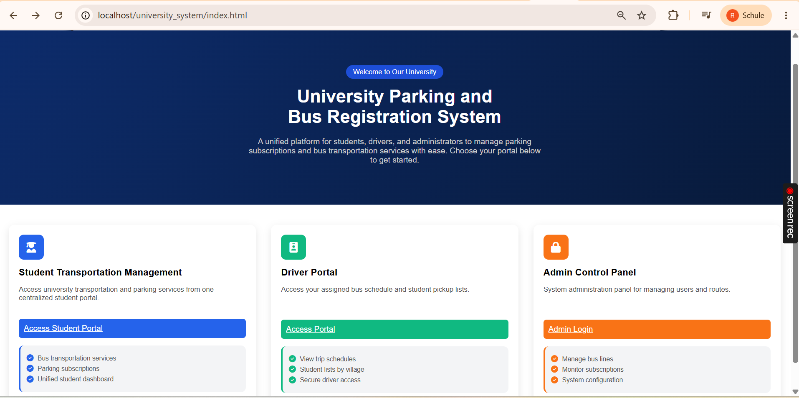
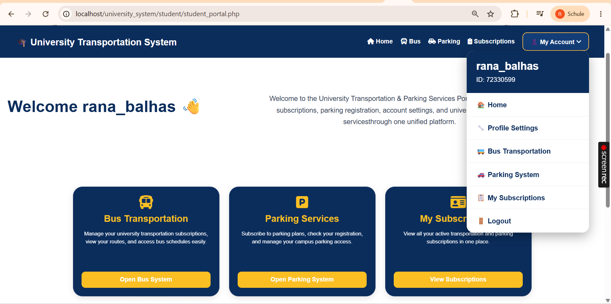
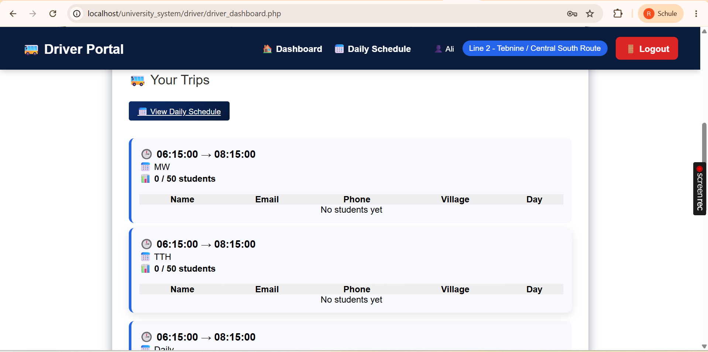
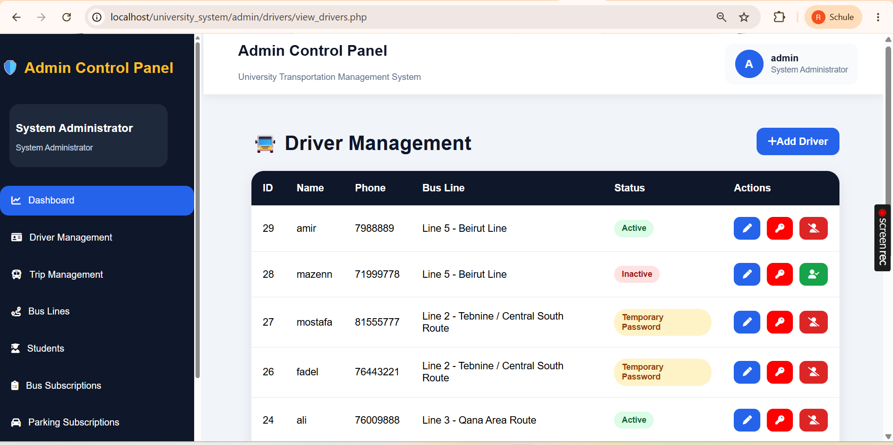
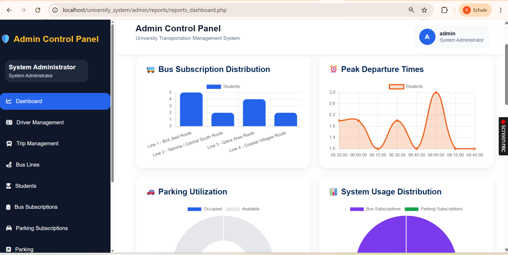
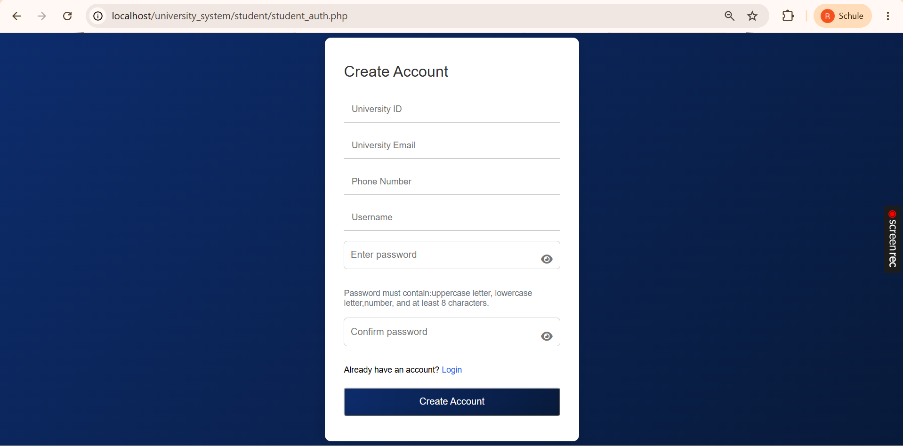

Web development
Building the structure, style, and functionality of websites and web applications.
HTMLCSSJavaScriptPHP
HELLO, I'M
I turn ideas into useful web experiences through thoughtful design, clean code, and practical problem-solving.

A LITTLE ABOUT ME
I’m a Communication Engineering graduate from Lebanese International University with a strong interest in web development and software engineering.
Through university projects, I have worked with front-end technologies, server-side development, and databases. I enjoy building practical applications, understanding how their parts connect, and improving through hands-on work.
I’m looking for an internship or junior opportunity where I can contribute, learn from a team, and keep growing as a developer.
Let’s connect ↗MY TOOLKIT
Technologies I have used in coursework and projects.
Building the structure, style, and functionality of websites and web applications.
Working with relational data and connecting web applications to databases.
Programming fundamentals and problem-solving across different languages.
Tools used during academic development and engineering coursework.
SELECTED WORK
A growing collection of academic and personal work.
A web-based system designed to bring university parking subscriptions and bus transportation services into one place, with separate functionality for students, drivers, and administrators.
Web interface, user portals, database-backed functionality







Academic graduation project · Screenshots shown from the local development version.
EDUCATION
Lebanese International University · Tyre Campus
Graduated August 2026
HAVE AN OPPORTUNITY?
I’m open to discussing internships, junior roles, and opportunities to learn by building.
Email me ↗